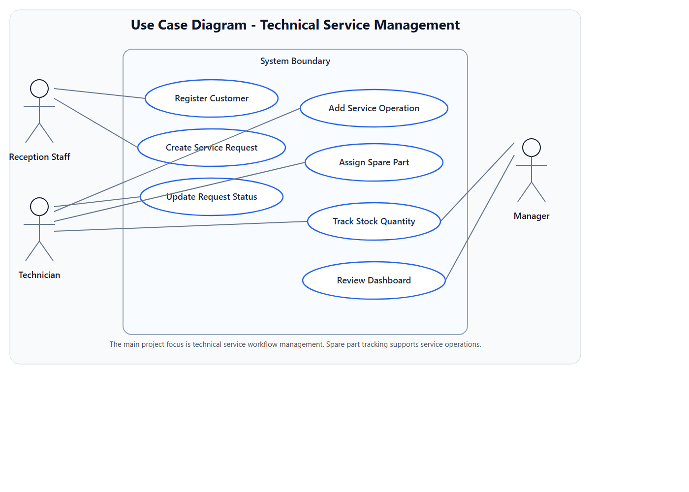
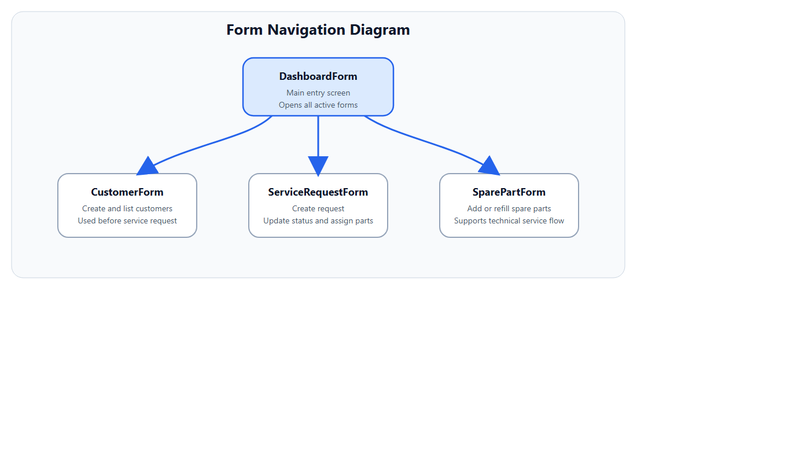

Technical Service Management with Spare Parts Tracking
Project Planning Report for YBS305 Visual Programming Course
1. Project Name and Business Description
This project is a Windows desktop application developed for electronic device service businesses. The application helps staff register customers, accept faulty devices, open service requests, track repair operations, manage spare parts usage, and monitor delivery progress.
The main business goal is to improve technical service workflow, reduce manual errors, and provide consistent operational tracking for daily service activities.
2. Job Workflow Explanation
- Reception staff registers a new customer or selects an existing customer.
- A service request is created for the customer device.
- Device information and the problem description are recorded.
- The technician reviews the request and adds service operations.
- Spare parts are assigned to the request when necessary.
- The system automatically decreases stock quantity after part assignment.
- The request status is updated through the repair lifecycle.
- The manager monitors open jobs, finished jobs, and low-stock parts from the dashboard.
3. Use Case Diagram
Actors
- Reception Staff
- Technician
- Manager
Main Use Cases
- Register customer
- Create service request
- Add service operation
- Assign spare part
- Update request status
- Review dashboard

4. Three Layer Architecture
4.1 User Interface Layer
The user interface is implemented as a WinForms desktop application and contains active forms for dashboard monitoring, customer management, service request management, and spare part inventory.
- DashboardForm: Displays summary cards and the latest service requests.
- CustomerForm: Adds and lists customers.
- ServiceRequestForm: Creates requests, updates status, adds operations, and assigns parts.
- SparePartForm: Adds or refills stock and lists inventory.

4.2 Business Logic Layer
- CustomerManager: Validates and stores customer information.
- ServiceRequestManager: Creates requests, updates statuses, records operations, and assigns spare parts.
- SparePartManager: Creates spare parts, refills stock, and provides inventory records.
- ApplicationBootstrapper: Initializes the database when the application starts.
Important business rules:
- Customer name cannot be empty.
- Device brand, model, and problem description are required for a service request.
- Assigned spare part quantity cannot exceed available stock.
- Request status moves to In Progress after operations or part assignments.
4.3 Data Layer
The data layer uses Entity Framework Core with SQLite for persistent storage. User and service data are stored in relational tables.
| Table | Main Fields | Purpose |
|---|---|---|
| Customers | Id, FullName, Phone, Email, CreatedAt | Stores customer identity and contact information. |
| Devices | Id, CustomerId, Brand, Model, SerialNumber | Stores customer device details. |
| ServiceRequests | Id, CustomerId, DeviceId, ProblemDescription, IntakeDate, Status | Tracks the main service workflow. |
| ServiceOperations | Id, ServiceRequestId, Description, OperationDate, Cost | Stores technician work steps and costs. |
| SpareParts | Id, Name, StockCode, UnitPrice, StockQuantity | Stores inventory data for service parts. |
| PartUsages | Id, ServiceRequestId, SparePartId, Quantity, UnitPriceSnapshot | Links used parts to service requests. |
5. Business Functions
- Register and list customers
- Add or refill spare parts
- Create service requests
- Update request status
- Add service operations with cost
- Assign spare parts and reduce stock automatically
- Review dashboard summaries for management decisions
6. Database and Collection Usage
The project uses SQLite with Entity Framework Core as the main storage solution. Collections are actively used inside the application for customer lists, service request grids, operation histories, part usage histories, and entity navigation collections.
7. Development Environment
- IDE: Visual Studio 2022
- Language: C#
- Framework: .NET 8 Windows
- Architecture: Three-layer architecture
- Database: SQLite
- ORM: Entity Framework Core
- Application Type: WinForms desktop application
8. Submission Note
This report is written in English as required by the course instructions. The project is presented as a technical service management system, while spare part tracking is positioned as a supporting business feature.